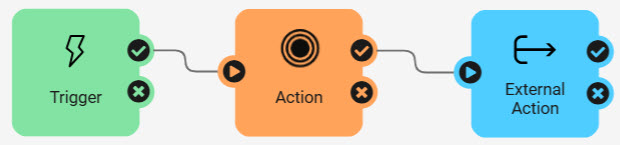
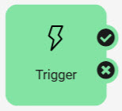
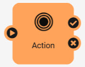
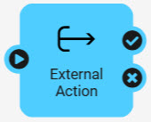
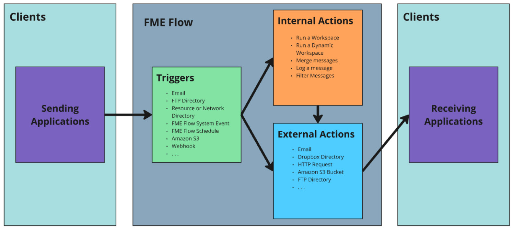

For a full description of the available triggers and actions, please visit our Automations documentation.
After completing this lesson, you'll be able to:
FME Flow Automations are flexible and can tailor automated workflows to your needs. The various triggers and actions that build an Automation primarily support this flexibility. Each trigger or action is a node. You connect nodes on the Automation canvas to control the order of events within your Automation. Nodes communicate by sending JSON messages to each other.

All Automations begin with a trigger, which waits for an event to occur and kicks off the workflow in response. The event that a trigger waits for and listens to can come from an external client or within FME Flow.

Some common Triggers in FME Flow Automations include:
After an Automation triggers, the next event is an action. FME Flow divides actions into two categories: internal and external. Internal actions process messages and perform actions on FME Flow, like running a workspace. External actions send messages to external clients or other FME Flow processes. Usually, an internal action occurs before an external action; however, Automations are flexible. You can use them in any order and have as many actions as you need in a single Automation.

Internal actions in FME Flow Automations include:

Some everyday External Actions in Automations include:
For a full description of the available triggers and actions, please visit our Automations documentation.
Let's look at the different components of an Automation in more detail.

A client is a user or system that sends or receives a message to/from FME Flow. The client may be a physical person or just a component in a computer system. Either way, a client is usually not a core part of FME Flow but someone or something that interacts with it. Triggers receive the incoming notification from a client. Two triggers are exceptions, Schedules and System Events, whereby FME Flow is the client sending the message.
For example, a database update might trigger a notification to FME Flow, in which case the database system is the client. However, a client could also be a person who, for example, triggers a notification by sending an email to FME Flow.
Actions perform functions internally on FME Flow or send outgoing notifications to clients. Again, the exception is an FME Flow Topic, where the receiving client is FME Flow to instigate other workflows, instead of an external client.
A protocol is a data exchange system between FME Flow and a client.
Automations exchange data between FME Flow and a client. Protocols are how FME Flow and the client send and receive messages. FME Flow defines each Trigger and Action using a particular communication protocol. For example, to trigger an incoming message by email, you create an Automation using an Email - SMTP Trigger. To notify a Java Message Service, you make an Automation containing a JMS Message Action.
FME Flow has many different protocols; some are available as Triggers, others as Actions, and some are both.
This table lists the different Trigger and Action protocols. FME Flow pre-defines the protocols; you do not need to define them in the web interface.
| Protocol | Description | Trigger | Action |
|---|---|---|---|
| Amazon S3 | Monitoring activity in an AWS S3 bucket/Communication to Amazon's Simple Storage Service. | Y | Y |
| Amazon SNS | Communication with Amazon's Simple Notification Service. | Y | Y |
| Amazon SQS | Communication with Amazon's Simple Queue Service. | Y | Y |
| Azure Event Grid | Communication with Microsoft Azure Events. | Y | Y |
| Dropbox | Monitoring activity in a Dropbox folder/Communicating a notification (file) to the Dropbox web service. | Y | Y |
| Email (IMAP) | Receive email messages from an IMAP Server. | Y | |
| Email (SMTP) | FME Flow itself receives email messages/Communication via an email server. | Y | Y |
| Filter | Test incoming messages for the presence of a specified string. | Y | |
| FME Flow Topic | Receive/send messages to a Topic to initiate workflow processes. | Y | Y |
| FME Workspace | Run an FME Form Workspace published to FME Flow. | Y | |
| FME Dynamic Workspace | Run an FME Form Workspace published to FME Flow, with the repository and workspace name coming from output keys in the Automation. | Y | |
| FTP Directory | Monitor activity/upload a file to an FTP Site. | Y | Y |
| HTTP Request | Post HTTP requests to the specified URL. | Y | |
| JMS | Communication with a Java Message Service. | Y | Y |
| Log | Write Event/Automation details to a log. | Y | |
| Merge | Combine messages before proceeding downstream in an Automation. | Y | |
| Resource or Network Directory | Monitor activity in a resource location or network directory. | Y | |
| SFTP Directory | Communication with an SFTP site. | Y | |
| Schedule | Complete workflow tasks at specific times in the future. | Y | |
| System Events | Communication with FME Flow systems. | Y | |
| UDP | Communication via a User Datagram Protocol port. | Y | |
| WebSocket | Communication via a WebSocket channel. | Y | Y |
| Webhook | Receive messages sent as HTTP Post requests from another application. | Y |
Each protocol has different parameters to define when you add the trigger or action to the Automation. For example, when you use an Email (SMTP) external action, you must specify the SMTP server and provide credentials to access it. You will learn more about those in the following lesson. For now, focus on when you would use the different protocols to automate workflows.